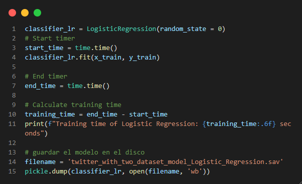

Regresión Logistica

Es un método estadístico que trata de modelar la probabilidad de una variable cualitativa binaria (dos posibles valores) en función de una o más variables independientes.

Este algoritmo cuenta con una buena exactitud al momento de clasificar,
esto se debe a que solo se tiene dos valores (tweet negativo o positivo)
por lo que es más fácil el poder clasificar.